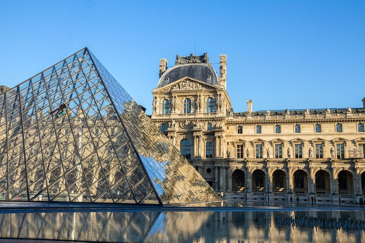

Country of France

Eiffel Tower
The symbol of Paris, the Eiffel Tower is a feat of ingenuity as much as it is a famous landmark. This structure of 8,000 metallic parts was designed by Gustave Eiffel as a temporary exhibit for the World Fair of 1889. Originally loathed by critics, the 320-meter-high tower is now a beloved and irreplaceable fixture of the Paris skyline.
he Eiffel Tower's gracefulness has earned it the nickname of "Iron Lady." Visitors are impressed by the tower's delicate airiness despite its monumental size and the breathtaking panoramas at each of the three levels.
Tourists can dine with a view at the first level or indulge at the Michelin-starred Le Jules Verne restaurant on the second level. At the exhilarating height of 276 meters, the top level offers a sweeping outlook over the city of Paris and beyond. Vistas extend as far as 70 kilometers on a clear day.

Cathédrale Notre-Dame de Chartres
For more than eight centuries, the magnificence of Chartres Cathedral has inspired the faithful, and some say this sublime sanctuary has restored belief in the doubtful. The UNESCO-listed cathedral exemplifies the glory of medieval Gothic architecture.
The Chartres Cathedral is renowned for its marvelous stained-glass windows, most dating to the 12th and 13th centuries. Covering 2,500 square meters, the brilliant stained-glass windows allow colorful light to filter into the vast nave, creating an ethereal effect. The intricately detailed windows reveal the incredible craftsmanship in depicting biblical stories.
The rose windows are especially noteworthy for their incredible size and details. Other highlights are the Passion window, one of the most original in its style and expression, and the Blue Virgin window that dates from the 12th century.
Every evening from April through December, the city of Chartres presents Chartres en Lumières, light shows that illuminate the cathedral and over 20 other monuments in the city. Creative presentations include Art Nouveau-inspired light shows and illuminations replicating the cathedral's colorful medieval-era painted facade. This free public event begins at dusk (around 9pm) and concludes at 1am every evening during the festival.

Musée du Louvre
In a stately palace that was once a royal residence, the Louvre Museum ranks among the top European collections of fine arts. Many of Western Civilization's most famous works are found here, including the Mona Lisa by Leonardo da Vinci, the Wedding Feast at Cana by Veronese, and the 1st-century-BC Venus de Milo sculpture.
The collection owes its wealth to the contributions of various kings who lived in the Louvre. Other pieces were added as a result of France's treaties with the Vatican and the Republic of Venice, and from the spoils of Napoléon I.
The Louvre displays around 35,000 artworks, including countless masterpieces. It's impossible to see it all in a day or even in a week. Take a private guided tour or focus on a shortlist of key artworks for the most rewarding experience.